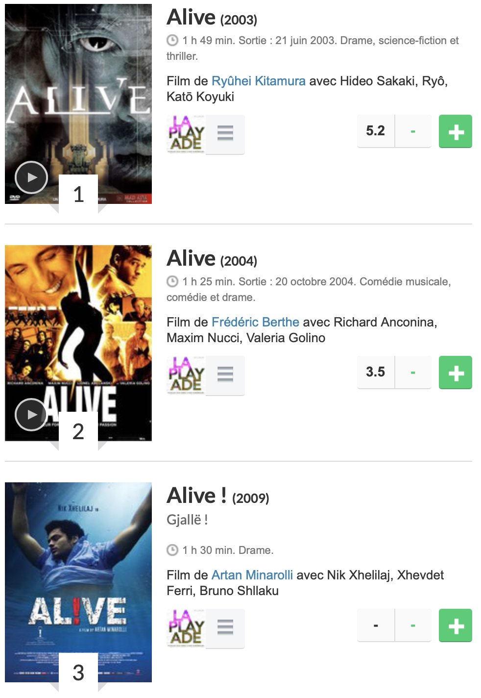
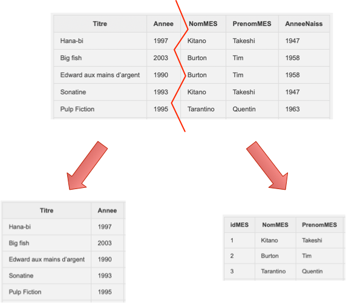
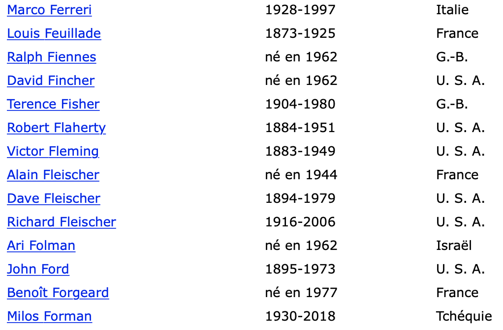

modele entite relation
Plan du cours:
Le langage de requêtes:
- illustration des actions sur une table avec un tableur: les prix Nobels. Opérations de recherche, filtre et tri sur une table: Lien
- Cours langage SQL et TD sur une base de données de prenoms: Lien, exercices: pdf
La structuration des données:
- Bases de données, règles pour construire une BDD en plusieurs tables, TP sur la creation d’une BDD cinéma (Base de Libre Office): Lien
- Problèmes d’intégrité, modele entité-relation (2): Lien, cours pdf et exercices
- SGBD, gestion de l’accès concurentiel, Lien
Travaux pratiques
- TP requêtes sur une table de prenoms: Lien
- TP sur la gestion d’une base de données de romans de sciences fiction, utilisant SQLite Browser
- TP sur le langage SQL avec des requetes sur une base de données. Différents thèmes sont proposés : Lien
- enquete de police
- villes du monde
- séries Netflix
- exoplanètes
- TP sur la creation d’un serveur avec gestion d’un formulaire en python/SQL: page 6
Structurer les données
Exemple:
Voici plusieurs informations: M Dupont, un policier, uniforme noir et chapeau rond, le capitaine Hadock fume une pipe, c’est un marin et il porte une casquette de marin; Tintin est journaliste, habillé avec une chemise.
la collection PERSONNAGES
Il existe une relation entre ces informations. Chacune se réfère à un individu et le décrit avec les mêmes descripteurs. On peut les rassembler en un tableau de données.
Ces personnages prennent vie dans certains des albums de la collection Tintin. Chaque album a une date de parution, un auteur, un editeur.
la collection ALBUMS
On peut rassembler ces autres informations dans un nouveau tableau. Il existe alors une association entre ces 2 tableaux: l’association est présent dans l’album.
Des relations de ce genre définissent des structures.
Schéma relationnel en une seul table
Avec un tableau simple, comme ceux manipulés par un tableur, on peut avoir la représentation suivante pour ce que l’on appelle une relation:
| titre | date | nom | prenom | annee_naissance |
|---|---|---|---|---|
| Hana-bi | 1997 | Kitano | Takeshi | 1947 |
| Big fish | 2003 | Burton | Tim | 1958 |
| Edward aux mains d’argent | 1990 | Burton | Tim | 1958 |
| Sonatine | 1993 | Kitano | Takeshi | 1947 |
| Pulp Fiction | 1995 | Tarantino | Quentin | 1963 |
| Play Time | 1967 | Tati | Jacques | 1907 |
| Vertigo | 1958 | Hitchcock | Alfred | 1898 |
| Psychose | 1960 | Hitchcock | Alfred | 1898 |
| Parle avec elle | 2002 | Almodovar | Pedro | 1949 |
| Mon oncle | 1958 | Tati | Jacques | 1907 |
| Volver | 2006 | Almodovar | Pedro | 1949 |
| Reservoir Dogs | 1992 | Tarantino | Quentin | 1963 |
| Alive | 2003 | Kitamura | Ryûhei | Null |
| Godzilla: Final Wars | 2004 | Kitamura | Ryûhei | Null |
Une relation est donc une table. Cette table possède un en-tête, constitué des attributs Titre, Annee, NomMES, PrenomMES, AnneeNaiss. La table contient des n-uplets, comme par exemple: Hana-bi, 1997, Kitano, Takeshi, 1947.
Cette table respecte 3 règles importantes pour la création et la modification d’une base de données:
- chaque entrée (ligne ou n-uplet) du tableau renseigne bien tous les attributs, et respecte bien le domaine de cet attribut (voir plus loin).
- la table ne contient pas deux n-uplets identiques.
- chaque entrée possède un identifiant unique, souvent placé dans la première colonne.
Q1. On voudrait insérer les lignes suivantes dans la table. Laquelle de ces lignes présenterait une anomalie d’insertion?

film Alive sur senscritique.com
Q2. Une erreur s’est glissée dans le tableau: Alfred Hitchcock est né en 1899 et non 1898. Vous le corrigez dans la ligne Vertigo. Est-ce que la table est complètement mise à jour?
Q3. Vous supprimez les lignes de Volver et Parle avec elle. Pouvez vous alors retrouver la date de naissance de Pedro Almodovar?
Anomalies dans une base de données
La première règle est l’UNICITE des (n-uplets) dans chaque table.
- Anomalie d’insertion: Rien n’empêche dans la gestion d’une table par un tableur de faire plusieurs entrées pour le même film. Il pourrait alors y avoir une répétition des données. Il peut aussi y avoir des valeurs non renseignées, ce qui présente aussi une anomalie d’insertion.
La base de données en une seule table présente plusieurs problèmes de redondance, ce qui va entrainer d’autres anomalies.
-
Anomalie de modification: La tenue d’une table de ce type peut entrainer des problèmes lors de la modification: Par exemple, la modification de l’année de naissance d’Hitchcock pour Vertigo et pas pour Psychose entraîne des informations incohérentes. Ou alors il faudrait modifier la table à plusieurs endroits, ce qui n’est pas réaliste si celle-ci est très grande…
-
Anomalie de suppression: On ne peut pas supprimer un film sans supprimer son metteur en scène, … et les informations sur celui-ci.
La redondance d’informations dans une table va entrainer des anomalies de modification, et de suppression. Cela va entrainer un coût d’espace et des preformances moindres de la base de données.
- Mais alors, comment faire pour corriger ces problèmes? … L’idée est de travailler avec 2 relations au lieu d’une seule et créer un lien entre ces 2 relations.

creation de 2 relations
Deux tables ou plus: La bonne méthode
La base de données doit:
- être capable de représenter individuellement les films et les réalisateurs, de manière à ce qu’une action sur l’un n’entraîne pas systématiquement une action sur l’autre,
- définir une méthode d’identification d’un film ou d’un réalisateur, qui permette d’assurer que la même information est représentée une seule fois. On utilisera pour chaque table une clé primaire.
- préserver le lien entre les films et les réalisateurs mais sans introduire de redondance.
Pour notre exemple, les deux tables s’appeleront Films et Réalisateurs.
Ensuite, il faudra décider si deux films différents, ou deux réalisateurs différents peuvent avoir ou non le même nom.

cineclubdecaen.com
Il semblerait qu’il y ait des homonymes dans les titres de film, ainsi que dans les noms propres de réalisateurs. On va devoir créer un identifiant unique pour les entrées de chaque table.
Première proposition
On sépare les données en 2 tables. On placera un index numérique à la première colonne, qui fournira un identifiant unique.
Films
| id_film | titre | date | id_rea |
|---|---|---|---|
| 0 | Hana-bi | 1997 | |
| 1 | Big fish | 2003 | |
| 2 | Edward aux mains d’argent | 1990 | |
| 3 | Sonatine | 1993 | |
| 4 | Pulp Fiction | 1995 | |
| 5 | Play Time | 1967 | |
| 6 | Vertigo | 1958 | |
| 7 | Psychose | 1960 | |
| 8 | Parle avec elle | 2002 | |
| 9 | Mon oncle | 1958 | |
| 10 | Volver | 2006 | |
| 11 | Reservoir Dogs | 1992 | |
| 12 | Alive | 2003 | |
| 13 | Godzilla: Final Wars |
Réalisateur:
| id_rea | nom | prenom | annee_naissance |
|---|---|---|---|
| 0 | Kitano | Takeshi | 1947 |
| 1 | Burton | Tim | 1958 |
| 2 | Tarantino | Quentin | 1963 |
| 3 | Tati | Jacques | 1907 |
| 4 | Hitchcock | Alfred | 1899 |
| 5 | Almodovar | Pedro | 1949 |
| 6 | Kitamura | Ryûhei | 1969 |
A faire: Compléter la première table avec les valeurs correspondantes pour id_rea.
Q4. L’association entre les informations des 2 tables est-elle toujours aussi explicite qu’avec une seule table?
Q5. Vérifier enfin que la base de données produite ne présente plus aucune des anomalies citées plus haut.
Deuxième proposition
Films
| id_film | titre | date |
|---|---|---|
| 0 | Hana-bi | 1997 |
| 1 | Big fish | 2003 |
| 2 | Edward aux mains d’argent | 1990 |
| 3 | Sonatine | 1993 |
| 4 | Pulp Fiction | 1995 |
| 5 | Play Time | 1967 |
| 6 | Vertigo | 1958 |
| 7 | Psychose | 1960 |
| 8 | Parle avec elle | 2002 |
| 9 | Mon oncle | 1958 |
| 10 | Volver | 2006 |
| 11 | Reservoir Dogs | 1992 |
| 12 | Alive | 2003 |
| 13 | Godzilla: Final Wars |
Réalisateur:
| id_rea | nom | prenom | annee_naissance |
|---|---|---|---|
| 0 | Kitano | Takeshi | 1947 |
| 1 | Burton | Tim | 1958 |
| 2 | Tarantino | Quentin | 1963 |
| 3 | Tati | Jacques | 1907 |
| 4 | Hitchcock | Alfred | 1899 |
| 5 | Almodovar | Pedro | 1949 |
| 6 | Kitamura | Ryûhei | 1969 |
L’association entre ces 2 tables est assurée par une nouvelle table FilmsRéalisés:
FilmsRéalisés (à compléter)
| id_film | id_rea |
|---|---|
| 0 | |
| 1 | |
| 2 | |
| 3 | |
| 4 | |
| 5 | |
| 6 | |
| 7 | |
| 8 | |
| 9 | |
| 10 | |
| 11 | |
| 12 |
Ces deux descriptions suivent le modèle entité-association. Mais la manière avec laquelle cette association est représentée est différente.
Q6. Expliquer quelle est cette différence.